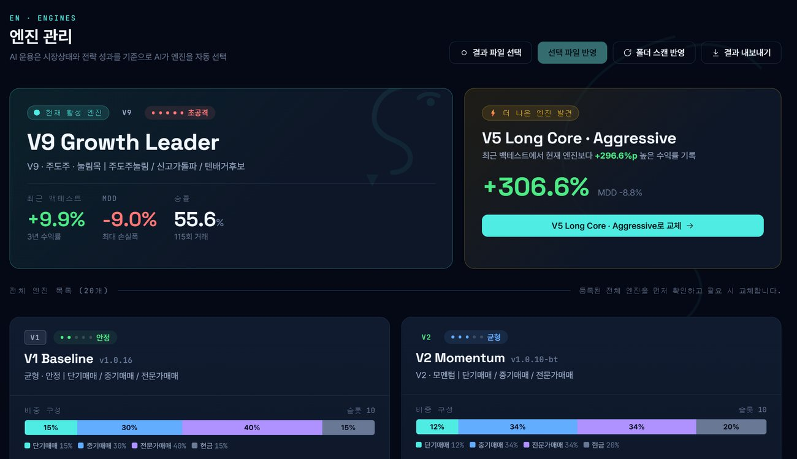

Alpha Viper
QUANT ENGINE · V1.0
☰
홈
제품소개
기능
운영흐름
화면구성
보안/리스크
도입안내
설치가이드
업데이트
FAQ
문의
Dashboard
상태와 기록을 한 화면에서 읽는 구성
계좌, API, 라이선스, 자동매매 상태와 주요 기능 화면을 하나의 흐름으로 배치했습니다.
운영 대시보드 · 계좌/API/라이선스/운용상태 통합 확인
종목 선별 · 단기/중기/전략 후보 관리
포트폴리오 구성 · 전략별 비중 관리
설정 · 계좌/매매/알림/백업 관리

엔진 관리 · 전략별 운용 상태 확인